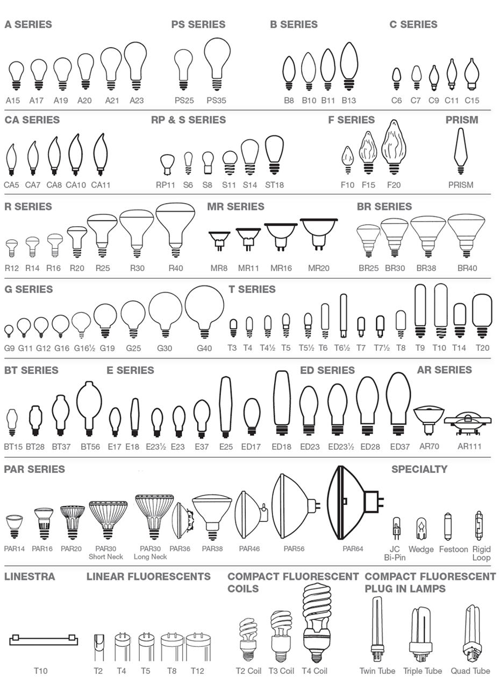

Shapes and Sizes - Understanding Different Bulbs
Light bulbs come in a variety of shapes and sizes, and the classification of these shapes is essential for compatibility with fixtures and design choices. A Bulb will typically have a letter classifier assigned to it to generalize its shape (for example: A, B, C, G, PAR, M, BR, T, etc.), as well as a number (an A19, a T8, a G40 etc.) which helps to hone in on what size that bulb will be within the shape category.
This system is standardized within the lighting industry for the most part, as it would be very confusing to have two bulbs with the same code that were nowhere near similar to each other! You may find instances where this hasn't been followed in a helpful fashion- sometimes it helps to compare and contrast with other products.
Bulb Base Types
Light bulb base types refer to the different types of fittings and connections that allow a light bulb to be securely installed into a light fixture. Each type of base is designed to fit specific types of fixtures and electrical connections. Some of the most common light bulb base types are Edison Screw Bases, Bayonet Bases, and Pin/Bipin Bases. There are a host of different ones you may run into, to include specialty styles such as Double End Sockets, Double End Singular Pin, Recessed Double Contacts etc.
Looking at photos can certainly help get you in the right wheelhouse, but some sizes are deceptively close in appearance when looking at photos for reference. Try and gain as much information as you can before buying a new bulb without knowing the particulars of what you are trying to replace.
How to Get Started
We'd recommend trying to determine what base type your bulb has first- the reasoning being that, if it turns out the shape is unidentifiable/no longer made or available, you are at least closer already towards looking for something else that will fit into your socket and light!
Base codes in many circumstances actually correlate to specific measurements. Others can be a bit more difficult, especially if they've been specially made for a proprietary purpose. Some, even without measurements, are distinct enough that you should be able to idenfity them properly with visual aids.
On threaded base bulbs and bayonet base bulbs, the number relates to the diameter of the base in millimeters at its widest point. an E26 (one of, if not the most commonplace threaded base in the United States) has a width of just about 26mm. We would recommend a set of calipers to make this easier to determine versus a measuring tape/ruler.
12mm, depending on where grabbed
On bipin base bulbs, the number relates to the inside distance between the two pins in millimeters. A GU5.3 pin base, unsurprisingly once knowing this, measures 5.3mm.
Try and take accurate measurements, as certain bulbs border very close to one another! Bipin bulbs especially, being so miniature, have various pin bases that can easily be confused for one another.